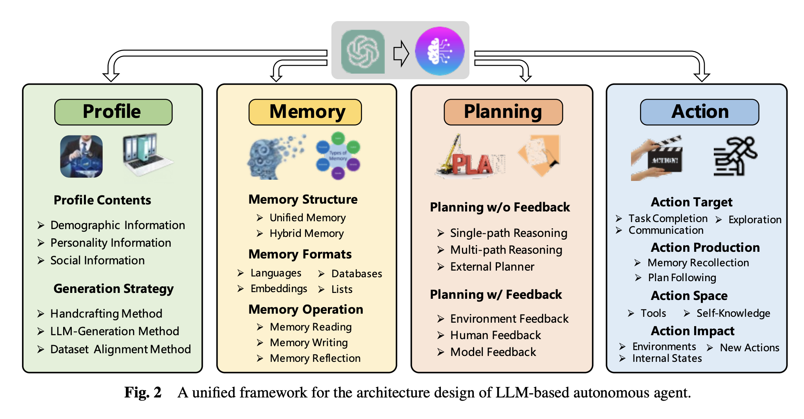

Multi-Agent¶
先聊一下传统意义上的 Agent，说清楚 LLM 引入 Agent 的背景和 motivation，再介绍一种对其理论建模的方式，以及比较强大的一款方便落地的框架（AutoGen），最后谈谈潜在的一些典型问题。
Classic Agent¶
Agent 不是一个新鲜的概念，在 LLM 引起广泛注意之前已经有了很多应用，实际上，它是对一个「有一定自主意识可以独立采取行动的代理人」的抽象。
经济或者商业领域有「代理人」和「委托人」的关系，政治或者国际关系上也有可以「机动行事」的外交官或特使，计算机特别是 AI 领域里，Agent 则指代可以感知其环境并根据该环境自主行动以达成其目标的系统或软件实体，其可以是简单的软件程序，也可以是复杂的机器人。
沿着这个路径，也有一些在不同行业里对 Agent 进行建模的理论。
代理理论（Principal-Agent Theory）主要用于经济学和管理学，探讨当一个人（代理人）代表另一个人（委托人）行事时可能出现的问题。核心问题是信息不对称和利益冲突。数学上，通常通过构建一个最优化模型来处理，其中，委托人设计一个激励机制（如工资、奖金等），以最大化其自身的效用，同时也考虑到代理人的行为反应。
博弈论是研究具有冲突和合作动机的理性决策者（Agent）之间互动的数学理论，提供了一系列模型，用于分析多个 Agent 在特定规则下的策略选择。其中，博弈可以是合作的或非合作的，信息可以是完全的或不完全的。
- 纳什均衡：在非合作博弈中，纳什均衡是每个玩家选择策略的一种状态，且无一玩家能通过改变策略单独获得更好的结果。
- 重复博弈与演化博弈：考虑在多次互动中策略如何演化。
决策理论涉及代理人在不确定性下如何做出最优选择的研究，通常涉及到概率论和统计决策理论。
- 期望效用理论：代理人根据其效用函数和各种行动结果的概率加权平均来选择行动。
- 贝叶斯决策理论：在信息不完全的情况下，代理人如何利用先验知识和观测数据更新其信念，并做出决策。
Markov decision process¶
计算机科学中的 Agent 模型通常通过算法和计算方法来实现，例如马尔可夫决策过程（Markov decision process, MDP），用于模拟在不确定环境中的决策过程。Agent 基于当前状态和可能的转移概率来选择行动，以最大化长期回报。
具体地，MDP 是一种数学框架，用于建模决策制定过程，其结果依赖于决策者的行为，并且部分依赖于随机因素。MDP 是强化学习和其他多种算法的基础，特别适用于那些可以通过状态、行动和奖励来描述的问题。强化学习是一种机器学习方法，其中一个 Agent 通过与环境交互来学习如何最大化某种累积奖励，使用 MDP 作为其理论基础，但强调的是在没有完整环境模型的情况下学习最优策略。
MDP 的组成元素：
- 状态空间（S）：代表所有可能的环境状态。
- 行动空间（A）：在给定状态下，Agent 可以选择的所有可能行动。
- 转移概率（P）：\(P(s'|s, a)\) 表示在状态 \(s\) 下采取行动 \(a\) 后转移到状态 \(s'\) 的概率。
- 奖励函数（R）：\(R(s, a)\) 表示在状态 \(s\) 下采取行动 \(a\) 所获得的即时奖励。
MDP 的目标是找到一个策略 \(\pi\)，为每个状态 \(s\) 指定一个行动 \(a\)，以最大化预期的累积奖励，通常是折扣奖励的总和，即： $$ V^\pi(s) = \mathbb{E}\left[\sum_{t=0}^\infty \gamma^t R(s_t, a_t) \mid s_0 = s, \pi\right] $$ 其中，\(\gamma\) 是折扣因子，介于 0 和 1 之间，用于调整未来奖励的当前价值。\(V^\pi(s)\) 表示在给定策略 \(\pi\) 下，从状态 \(s\) 开始的预期累积折扣奖励。我们逐项解析这个式子，以便更好地理解它的数学含义和实际意义：
-
\(s_0 = s\)：表示考虑的起始状态是 \(s\)。我们想要评估从这个特定状态开始，遵循策略 \(\pi\) 时的长期表现。
-
策略 \(\pi\)：是一个从状态到行动的映射。对于每一个状态 \(s\)，策略 \(\pi\) 指定一个行动 \(a\)，即 \(\pi(s) = a\)，\(\pi\) 决定了在每个状态下应选择哪个行动。
-
\(\sum_{t=0}^\infty \gamma^t R(s_t, a_t)\)：
- 求和符号 \(\sum\)：表示考虑所有从时间 \(t = 0\) 到无穷的奖励。
- 折扣因子 \(\gamma^t\)：一个介于 0 和 1 之间的数，表示奖励随时间的衰减。折扣因子的作用是使得远期奖励的现值减小，有助于奖励总和的收敛，并且反映了未来不确定性的影响。
- 奖励 \(R(s_t, a_t)\)：在时间 \(t\)，状态为 \(s_t\)，并采取行动 \(a_t\) 时获得的即时奖励。
-
期望 \( \mathbb{E} \)：表示正在计算的是期望值，即平均意义上的累积折扣奖励。期望是考虑到所有可能的未来状态序列，根据转移概率和策略 \(\pi\) 的概率分布来计算的。
将这些组件结合起来，\(V^\pi(s)\) 表示在策略 \(\pi\) 的指导下，从状态 \(s\) 开始，期望获得的所有未来奖励的折扣总和的平均值。这个值提供了一个量化的度量，表明遵循策略 \(\pi\) 时，从状态 \(s\) 开始的长期效用是多少。通过计算和比较不同策略下的 \(V^\pi(s)\) 值，可以评估哪个策略在长期内更有效，从而帮助选择或优化策略。
总体上，一个良好的 Agent 需要可以在复杂、不确定环境中进行有效决策。
Motivation¶
单个 LLM 在处理复杂任务时已经显示出不可小觑的能力，但在一些复杂问题上，单个 LLM 依旧力不从心。此时一个自然的考虑就是将问题做 modularization，让多个 LLM 分别去解决多个子问题，如此，即可将一个复杂问题分解为多个子任务，分别处理。宏观来看，解决单个子问题的单个 LLM 实际上就是一个 Agent（自主决策）。
而传统意义上的 Agent 在 LLM 语境下并不完全适用——LLM 语境中的 Agent 不仅能够独立作出决策和响应，还必须能够与其他 Agent 进行复杂的交互对话，这在传统的 Agent 设计中不是必须的，所以，LLM 语境下的 Agent 相对来说被赋予了更具体的定义和功能，特别是强调了多智能体之间的交流和协作能力。
例如，AutoGen 中的 Agent 是可以发送消息、接收消息并通过模型、工具或人类输入（或它们的组合）生成回复的实体。这种设计使得 Agent 可以模拟现实世界中的实体（如人类、算法等），并简化了作为智能体协作的复杂工作流的实现。
Principle¶
目前对 LLM Agent 建模的理论并不多（截至 2024 年 7 月 15 号我的检索结果），这个概念更多是一个实际应用中的工程概念。这里采用 A Survey on Large Language Model based Autonomous Agents 中提出的构建 LLM Agent 的统一理论框架。
Construction¶
结构上，Agent 可以分为四个模块，如图: 
其中，Profiling Module 定义智能体的角色和特征，包括手工制定、基于 LLM 生成和数据集对齐三种方法。Memory Module 设计内存结构来存储和回忆以往的行为和环境信息，包括统一内存和混合内存两种结构。内存格式包括自然语言、嵌入式表示和数据库。Planning Module 帮助智能体进行任务分解和未来行动的规划，分为无反馈规划和有反馈规划两种类型。Action Module 负责将智能体的决策转化为具体行动，涉及行动的目标、生成方式、可用的行动空间和行动的影响。
各个模块的详细介绍见下文。
Profiling Module¶
设置 Agent 的身份和行为特征。包括手工指定（Handcrafting）、基于LLM生成（LLM-generation）、数据集对齐（Dataset Alignment）三种方法。
- Handcrafting：手动设定 Agent 的特征和行为。
- LLM-generation：利用 LLM 自动生成 Agent 的描述。
- Dataset Alignment：通过真实世界数据集来定义 Agent 的属性。
Memory Module¶
设计用于存储和检索过去的行为和环境信息的结构，分为统一内存（Unified Memory）和混合内存（Hybrid Memory）。
- 统一内存：仅模拟人类短期记忆，通常通过上下文学习实现。
- 混合内存：显式模拟短期和长期记忆，提高了 Agent 的环境适应性和行动一致性。
Planning Module¶
帮助 Agent 进行任务分解和未来行动的规划，分为无反馈规划（Planning without Feedback）和有反馈规划（Planning with Feedback）。
- 无反馈规划：Agent 在没有外界反馈的情况下生成整体计划。
- 有反馈规划：Agent 在行动后根据外界反馈调整计划。
Action Module¶
负责将决策转化为具体行动，涉及行动的目标、生成方式、可用的行动空间和行动的影响。
Capability Acquisition¶
以上是在架构层面对 Agent 进行建模，可以视作是影响 Agent 的「硬件」，但我们还可以通过「软件」的方式来赋能 Agent 更强的能力。其中，可以通过微调获得能力，使用基于人类注释、LLM生成的数据集或真实世界数据集微调 LLM，也可以不通过微调获得能力，包括提示工程（Prompt Engineering）和 Agent 交互机制（Mechanism Engineering）两种策略，旨在通过精心设计的提示或 Agent 交互机制来提升 Agent 的能力。
Evaluation¶
Subjective Evaluation¶
- Human Annotation：人类评审员对 Agent 的输出进行评价。
- Turing Test：测试 Agent 的输出是否能与人类输出难以区分，以评估其人类水平的表现能力。
Objective Evaluation¶
- Metrics (评估指标)：包括任务成功率、与人类行为的相似度、效率等。
- Protocols (评估协议)：包括真实世界模拟、社会评价、多任务评价和软件测试等。
- Benchmarks (基准测试)：使用特定的基准测试集来系统地评估 Agent 性能，如ALFWorld、IGLU等。
Implementation（AutoGen）¶
上面了解了 Multi-Agent 的理论背景，但实际开发中我们往往不会自行开发 infra，还是会采用方便配置的 Multi-Agent 框架。目前优秀的框架已经有很多，像是 AutoGPT 和 MetaGPT 等等，甚至还有图形化的 LangGraph、Dify 和 Coze 等等，这里我以微软的 AutoGen 为例，做一个粗略的实现机制的介绍，其实各个框架基本都是大同小异。
AutoGen 中，上述特点具体体现在代码的类（classes）、参数（parameters）和方法（methods）中，下面是一些具体的实现方式：
ConversableAgent 类：AutoGen 中所有 Agent 的基类，提供了基础的消息发送（send）、接收（receive）和回复生成（generate_reply）的方法，使得 Agent 能够参与到对话中，与其他 Agent 或用户交互。
from autogen import ConversableAgent
# 创建一个可对话的Agent，配置其LLM模型和人类输入模式
agent = ConversableAgent(
name="example_agent",
llm_config={"config_list": [{"model": "gpt-4", "api_key": os.environ.get("OPENAI_API_KEY")}]},
human_input_mode="NEVER" # 此Agent不需要人类输入
)
定制参数和方法：human_input_mode：一个配置参数，支持开发者设定 Agent 是自动运行（NEVER），还是在某些操作前需要人类输入（ALWAYS 或者条件性触发）。code_execution_config：支持 Agent 执行代码，通常用于需要 Agent 操作外部软件或工具的场景。
# 为Agent注册工具调用功能
def calculator(a, b, operator):
if operator == '+':
return a + b
# 其他操作省略...
# 注册工具
agent.register_for_llm(name="calculator", description="A simple calculator")(calculator)
agent.register_for_execution(name="calculator")(calculator)
协作机制：register_reply 和 initiate_chat 方法：允许 Agent 注册响应函数和启动与其他 Agent 的对话，是实现多 Agent 协作的核心。
# 创建另一个Agent作为对话伙伴
partner_agent = ConversableAgent(
name="partner",
llm_config={"config_list": [{"model": "gpt-4", "api_key": os.environ.get("OPENAI_API_KEY")}]},
human_input_mode="ALWAYS" # 此Agent总是需要人类输入
)
# 初始化对话
result = agent.initiate_chat(
partner=partner_agent,
message="Let's start a conversation.",
max_turns=5 # 设置最大对话轮数
)
层次化和动态交互：可以创建包含多个 Agent 的复杂结构，其中高级 Agent 可以管理其他 Agent，并根据情况动态调整策略，通常通过在高级 Agent 中编写管理逻辑来实现，利用 send 和 receive 方法来协调子 Agent 的行动。
# 在更高级的应用中，可以设置一个Agent来协调其他多个Agent
manager = ConversableAgent(
name="manager",
llm_config={"config_list": [{"model": "gpt-4"}]},
human_input_mode="ALWAYS"
)
# 管理多个子Agent，示例中只展示了初始化部分
sub_agent1 = ConversableAgent("sub_agent1", llm_config={"config_list": [{"model": "gpt-4"}]})
sub_agent2 = ConversableAgent("sub_agent2", llm_config={"config_list": [{"model": "gpt-4"}]})
# 假设存在一个复杂任务需要这些Agent合作完成
task_message = "Please collaborate to solve this problem."
manager.initiate_chat(partner=sub_agent1, message=task_message)
manager.initiate_chat(partner=sub_agent2, message=task_message)
More¶
-
A Survey on Large Language Model based Autonomous Agents
Submitted on 22 Aug 2023 (v 1), last revised 4 Apr 2024 (this version, v 5)
-
The Rise and Potential of Large Language Model Based Agents: A Survey
Submitted on 14 Sep 2023 (v 1), last revised 19 Sep 2023 (this version, v 3)
-
AutoGen: Enabling Next-Gen LLM Applications via Multi-Agent Conversation
Submitted on 16 Aug 2023 (v1), last revised 3 Oct 2023 (this version, v 2)